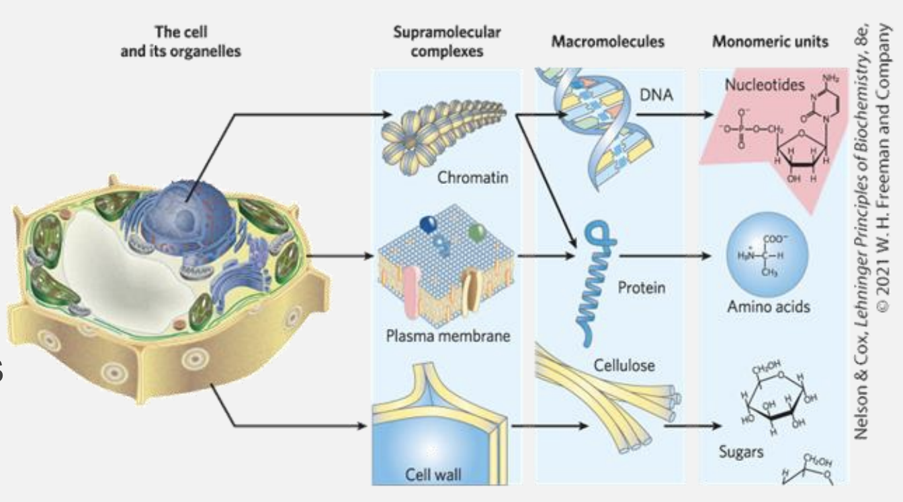
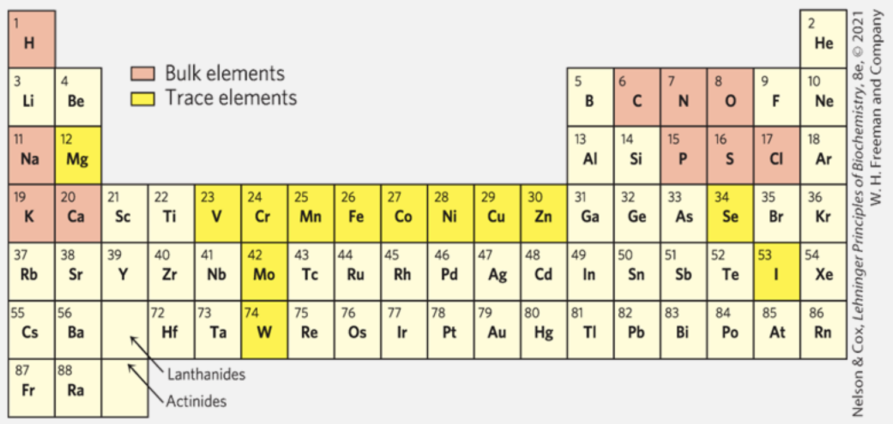
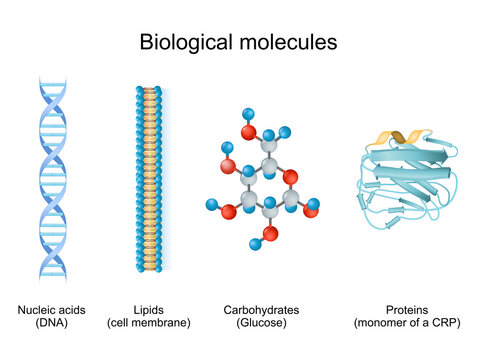

Lesson 1 - An Introduction to Cell Biology: Key Concepts and Biomolecules
The Living Cell
- Cells vary in complexity and can be highly specialized for their environment or function within a multicellular organism, they sharere markable similarities
- Animal and plat cells
- 5 to 100 micrometers in diameter
- Unicellular microorganisms
- 1 to 2 micrometers in diameter
- Animal and plat cells
Plasma Membrane
This is what defines the periphery of a cell and has the following main characterstics - Thin - Flexible - Hydrophobic - This is the characterstic that allows a cell to sort "self-assembly" and confine itself from the outer chaos
The membrane includes the following components
-
Transport proteins
- Responsible for moving molecules across cell membranes.
- Passive transport: movement of substances down their concentration gradient (e.g., ion channels seen in
Genetica Dei Ricordi - Andrea Levi). - Active transport: Pumping substances against their gradient using energy (e.g., sodium-potassium pump).
- This includes transportation of large molecules (e.g. glucose and glucose transporters)
- Ion transport: Regulatinon of Ion flow to maintain electrical and chemical balance (e.g., calcium or chloride channels).
-
Receptor proteins
- Proteins that are responsible for cullular communications by detecting chemical signals from the extracellular environemnt.
- Essential for processes like immune response, cell growth, metabolism, and sensory perception.
- Membrane enzymes
- Among useful these things do here are some of the most important
- Signal transduction: Membrane enzymes help relay signals from the outside to the inside
- Metabolism: Some membrane enzymes participate in metabolic pathwways (e.g. ATP synthase in the mitochondrial membrane is responsible for producing ATP)
- Transport regulation: Edit substances to facilitate their transport across the cell membrane. For instance, some enzymes modify molecules like glucose, making them easier to transport.
- Among useful these things do here are some of the most important
Cytoplasm
- Internal volume enclosed by the plasma membrane
-
Composed of cytosol
- Higly concentrated solution, it is the fluid portion of the cytoplasm
- It is a gel-like substance that contains water, dissolved ions, small molecules, and proteins.
- The cytosol serves as the site for many cellular processes, such as:
- Metabolic reactions
- Signal transduction
- And the transport of materials.
The cytosol generally provides a medium in which organelles are suspended and facilitates the movement of molecules and ions throughout the cell. It's an isolated enviroment where all sort of cellular processes take place
Among other things, the cytosol contains enzymes, RNA, amino acids, nucleotides, metabolites, coenzymes, and inorganic ions
Nucleus and the Genome
What is the Genome? - A genome is the complete set of genetic material in an organism, including all of its DNA - It contains all the instructions needed for growth, development, functioning, and reproduction. The genome includes not only genes, which code for proteins, but also non-coding regions that regulate gene expression and maintain structural integrity.
What type of information does the various genome components encode?
A summarization of what I understood by reading "The Self-Assembling Brain": - The genome is better understood not just as a descriptive set of instructions, but as an algorithmic system—one that operates dynamically to produce complex biological outcomes. Rather than merely listing the static information of genes, the genome functions as an active program that interacts with the environment, executes processes, and adapts its output based on various conditions.
-
In prokaryotes (bacteria and archaea), the genome is typically stored as a single, circular DNA molecule located in the nucleoid, an area of the cell without a membrane.
-
In eukaryotes, the genome is organized into multiple linear DNA molecules, stored within a membrane-bound nucleus, with additional genetic material present in organelles like mitochondria and chloroplasts.
Supramolecular structures

Cells build supramolecular structures which are are large assemblies of molecules held together by noncovalent interactions, including hydrogen bonds, ionic interactions, van der Waals forces, and the hydrophobic effect.
These structures are important because they are flexible and can form or break easily. Examples include:
- Protein complexes: Groups of proteins working together.
- Lipid bilayers: The main structure of cell membranes.
- DNA double helix: Two strands of DNA held by hydrogen bonds.
- Cell assemblies: Structures like ribosomes and chromatin in cells.
The main elements comprising biomolecules

The main elements in biochemical materials are carbon (C), hydrogen (H), oxygen (O), and nitrogen (N). These elements strongly tend to form covalent bonds, leading to a wide variety of chemical and biological compounds.
- 70% of the human body is made up of water (H₂O).
- Sulfur (S) is found in nearly all proteins.
- Phosphorus (P) is crucial for metabolism and the structure of nucleic acids like DNA and RNA.
Functional groups
Functional groups are specific groups of atoms within molecules that determine the characteristic chemical reactions and properties of those molecules.
In biomolecules, functional groups are essential for dictating how molecules interact with each other and perform biological functions
These groups typically replace hydrogen atoms in hydrocarbons, giving rise to molecules with diverse chemical behaviors.
-
Variety of carbon (\( \text{C} \)): Carbon's ability to form covalent single, double, and occasionally triple bonds makes it incredibly versatile.
- In biological molecules, this means carbon can create stable, complex structures essential for life, such as chains and rings, which serve as backbones for biomolecules.
-
Formation of 4 stable single bonds: Carbon can form up to four stable single covalent bonds with other atoms, including other carbon atoms.
- This property allows the formation of long carbon chains and branched structures, which are foundational to many biomolecules like carbohydrates, lipids, and proteins.
-
Biomolecules as hydrocarbons: Biomolecules can be thought of as hydrocarbons (compounds made of hydrogen and carbon). In most biomolecules, some of the hydrogen atoms are replaced by functional groups, such as:
- hydroxyl \( \text{-OH} \)
- carboxyl \( \text{-COOH} \)
- amino \( \text{-NH}_2 \)
Giving the molecules distinct properties and reactivity.
The four classes of biomolecules

- Nucleic Acids: DNA and RNA, which store and transmit genetic information.
- Lipids: Fats and oils used for energy storage, insulation, and cell membranes.
- Carbohydrates: Sugars and starches used for energy and structure.
- Proteins: Made of amino acids; they act as enzymes, structural components, and in cell signaling.